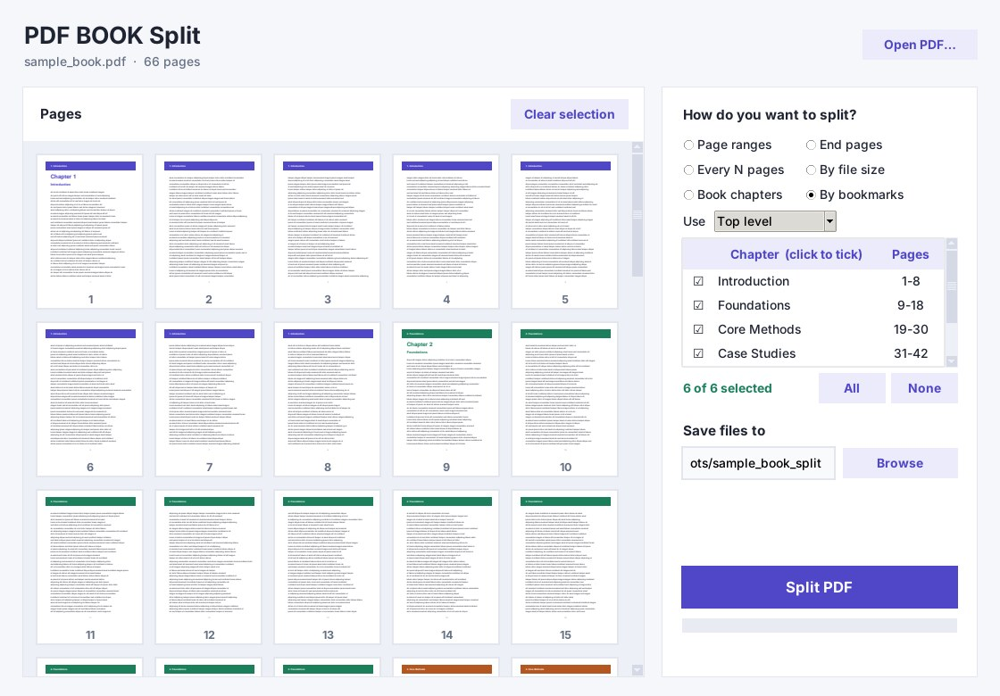

كيف تقسّم ملف PDF حسب العلامات المرجعية
لتقسيم ملف PDF حسب العلامات المرجعية (bookmarks)، يقرأ البرنامج الفهرس الداخلي للملف، فتختار الفصول التي تريدها، ويحفظ كل فصل في ملف مستقل يبدأ من صفحة علامته وينتهي قبل العلامة التالية. في PDF BOOK SPLIT تختار الوضع By bookmarks، وتحدد الفصول، ثم تضغط Split PDF. يعمل البرنامج على ويندوز 10 و11 بدون إنترنت، فلا يُرفع الملف.

ما العلامات المرجعية في ملف PDF؟
العلامات المرجعية، وتُسمّى أيضًا المخطط أو الفهرس الداخلي، هي القائمة التي تظهر في الشريط الجانبي لقارئ PDF. كل علامة تحمل عنوانًا وتشير إلى صفحة. في الكتب الإلكترونية المنشورة رسميًا تكون غالبًا عناوين الأجزاء والفصول، وقد يكون تحت كل فصل عناوين فرعية. أما الكتب الممسوحة ضوئيًا أو المحوّلة بالطباعة إلى PDF فكثيرًا ما تخلو منها.
خطوات التقسيم حسب العلامات المرجعية
- افتح الملف في البرنامج، أو اسحبه إلى النافذة.
- اختر الوضع By bookmarks. تظهر قائمة بعناوين الفصول وصفحاتها.
- اختر المستوى: Top level للفصول الرئيسية فقط، أو Top two levels لتشمل العناوين الفرعية تحتها.
- اضغط على أي صف لتحديده أو إلغائه، أو استخدم All وNone. لا يُقسَّم إلا ما حددته.
- اضغط Split PDF.
ماذا ستحصل عليه
- ملف لكل فصل محدد، يحمل اسم الفصل مسبوقًا برقمه، مثل 01 اسم الفصل.pdf.
- الصفحات التي قبل أول علامة (الغلاف والمقدمة) تُحفظ في ملف مستقل باسم Front matter.
- العلامات المرجعية التي داخل كل فصل تُنسخ إلى ملفه، فيبقى التنقل داخل الفصل سهلًا.
- إذا أشارت علامتان إلى الصفحة نفسها يأخذ البرنامج الأولى، فلا تخرج ملفات فارغة.
- تُحفظ الملفات في مجلد جديد بجوار ملفك، ولا يتغير الملف الأصلي.
مقارنة سريعة مع أداة أونلاين
| PDF BOOK SPLIT | أداة أونلاين مثل Sejda (النسخة المجانية) | |
|---|---|---|
| رفع الملف | لا يُرفع، كل شيء على جهازك | يُرفع إلى الخادم |
| حجم الملف وعدد الصفحات | بلا حد | حتى 200 صفحة أو 50 ميغابايت |
| عدد المرات | بلا حد بعد الشراء | 3 مهام في الساعة |
| اختيار فصول معينة فقط | نعم، مربع اختيار لكل فصل | حسب المستوى |
| ملف بلا علامات مرجعية | وضع Book chapters من الفهرس المطبوع | لا يقسم حسب الفصول |
| النظام | كمبيوتر ويندوز 10 و11 فقط | أي متصفح |
حدود Sejda كما تظهر في صفحتها العربية للتقسيم حسب العناوين في نوفمبر 2026، وقد تتغير.
إذا لم يكن في الملف علامات مرجعية
هذه هي المشكلة الأشهر مع الكتب العربية الممسوحة. الحل في البرنامج نفسه: وضع Book chapters، تلصق فيه نص الفهرس المطبوع، وتحدد رقم صفحة PDF التي تحمل الصفحة 1 من الكتاب. اقرأ كيف تقسّم كتاب PDF إلى فصول بدون علامات مرجعية، واستخدم حاسبة رقم الصفحة لمعرفة الفرق بين الترقيمين.
حدود البرنامج
- البرنامج لا ينشئ علامات مرجعية جديدة، بل يقرأ الموجودة في الملف.
- الروابط الداخلية التي تقفز من فصل إلى فصل آخر قد لا تعمل بعد التقسيم.
- يعمل على ويندوز 10 و11 بنظام 64 بت فقط، ولا توجد نسخة لنظام ماك أو للهاتف.
أسئلة شائعة
ما العلامات المرجعية (bookmarks) في ملف PDF؟
هي الفهرس الداخلي للملف الذي يظهر في الشريط الجانبي لقارئ PDF. كل علامة تحمل عنوانًا وتشير إلى صفحة، مثل عنوان فصل وصفحة بدايته. ليست كل الملفات فيها علامات مرجعية.
كيف أعرف أن ملفي فيه علامات مرجعية؟
افتحه في PDF BOOK SPLIT واختر By bookmarks. إذا ظهرت قائمة بعناوين الفصول فالملف فيه علامات. ويمكنك أيضًا فتح لوحة العلامات المرجعية في قارئ PDF عندك.
هل أستطيع تقسيم بعض الفصول فقط؟
نعم. كل فصل في القائمة له مربع اختيار. اضغط على الصف لتحديده أو إلغائه، أو استخدم All وNone. لا يُحفظ إلا ما حددته.
ماذا يحدث للصفحات التي قبل أول علامة مرجعية؟
تُحفظ في ملف مستقل باسم Front matter، فلا تضيع صفحات الغلاف والمقدمة.
ماذا أفعل إذا لم يكن في الملف علامات مرجعية؟
استخدم وضع Book chapters: تلصق نص الفهرس المطبوع وتحدد رقم صفحة PDF التي تقابل الصفحة 1 من الكتاب، فيقسم البرنامج الكتاب إلى فصول.
هل يُرفع ملفي إلى الإنترنت؟
لا. يتم التقسيم على جهازك، بدون حساب وبدون رفع، ولا يوجد حد لعدد الصفحات أو حجم الملف أو عدد المرات بعد الشراء.
أدلة ذات صلة
حمّل النسخة التجريبية · 3 عمليات مجانية اشترِ · 9 دولارات
كمبيوتر ويندوز 10 و11 فقط (64 بت) · يعمل بدون إنترنت · تجربة مجانية · استرجاع خلال 7 أيام